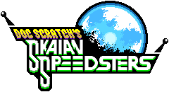

SKAIAN SPEEDSTERS TEMPORAY DOWNLOAD LINK
Download here!
By Hydro-City-Zone
How to play Skaian Speedsters
- Download Doctor Robotnik's Ring Racers from kartkrew.org
- Beat or skip the tutorial. (Use the cheat-code "mustard gas" to unlock the ability to use addons without having to play through a full cup.)
- Add DRCFL_SkaianSpeedsters-v1.pk3 to your addons folder -- on Windows, this should be in the ringracers folder that the installer came in. On Mac or Linux, check your home directory.
- Load the addon through the extras menu.
- Enjoy!